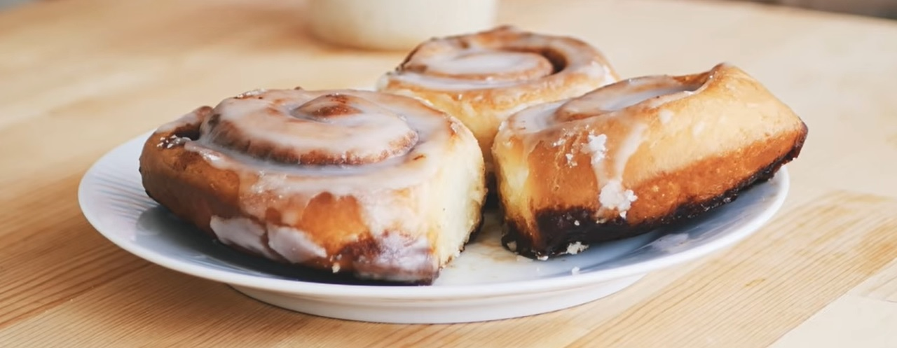

小鍋中加入牛奶、糖跟奶油，以小火煮到糖溶解、奶油全都融化，移火放涼至 37~42 ˚C. 這溫度用手指觸碰不會感覺燙，只會覺得溫而不熱
在煮好的牛奶裡加入速效酵母，輕輕攪拌，然後放在溫暖的地方作用10分鐘
將中粉跟鹽過篩，接著倒入發酵好的酵母液體，然後攪拌至看不見乾粉，這時候的麵團只要拌勻即可，還不需要進行揉麵
在麵團上蓋上保鮮膜或布，放在家裡最溫暖的地方發酵一小時
趁麵團在發酵，來製作肉桂糖內餡，小碗裡先混勻黑糖跟肉桂粉，然後加入在室溫放了一個小時、已經非常柔軟的奶油，攪拌到非常均勻柔軟的質地，備用
同時幫烤盤抹上一層薄奶油
一小時後，麵團應該長大接近兩倍，把麵團倒在揉麵板上，揉麵大概 10分鐘，如果麵團黏手可以灑少許麵粉，但麵粉用量儘可能要少，不要讓麵團變得太乾
將揉好的麵團擀成長35 寬25公分的長方形
把事先做好的肉桂糖均勻的塗抹上去，邊邊可以留一公分不抹
從較短的那邊開始捲，這樣可以捲出較多的層次，捲到最後可以捏一下麵團邊、稍微收個口
把麵團切成 3.5 公分厚的肉桂捲，我們是用綿線來切麵團，也可以用刀子或牙線
把切好的肉桂捲麵團放在烤盤裡，彼此之間要留一點縫隙，讓它們在二次發酵時可以有足夠空間長大，若擠的太滿，烤出來的肉桂捲會因為擠壓而變形，二次發酵30分鐘
烤箱預熱 180˚C，烘烤 25-35分鐘，或表面烤至漂亮棕色，我們用的鑄鐵鍋厚烘烤約35分鐘，若使用蛋糕烤模，烘烤時間可以介於25~30分鐘
出爐後的肉桂捲放涼10分鐘，同時間來做糖霜，在一個小碗裡加入糖粉跟水，充份攪勻就完成了
將糖霜塗在肉桂捲上，糖霜用量可以自行調整，放涼後便可享用，塗過糖霜的肉桂捲可以再加熱吃，只要用140-150度C來烘烤
